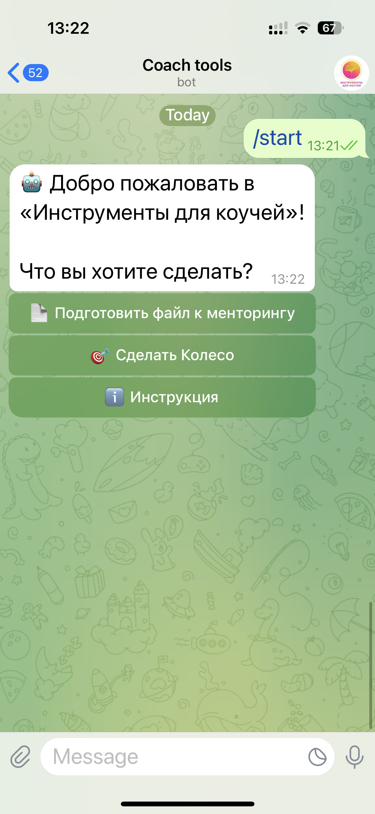
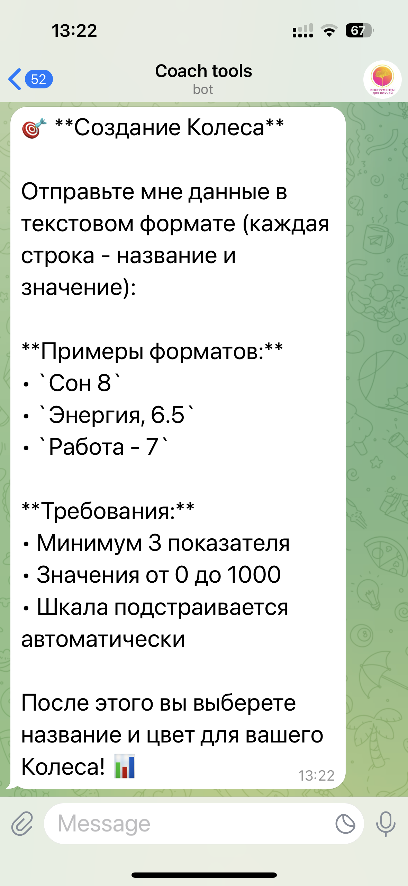
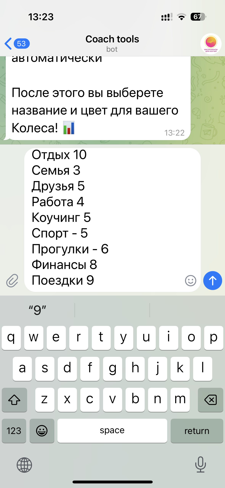
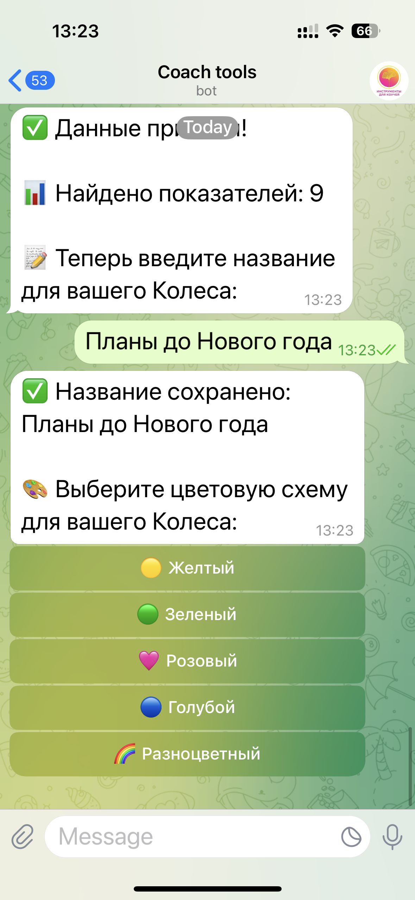
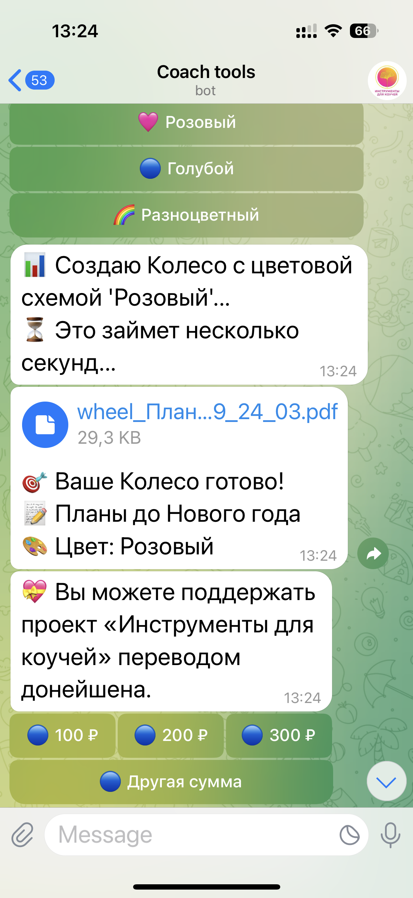
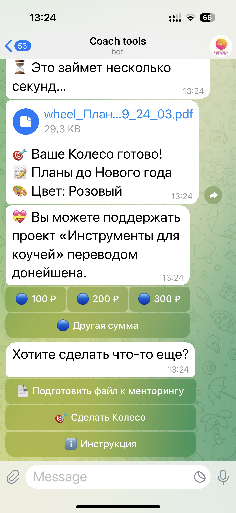
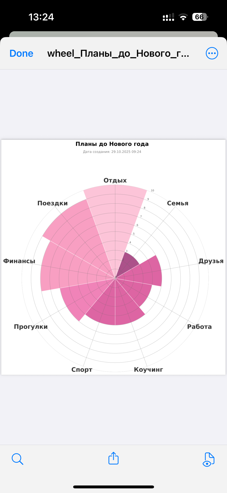

1️⃣ Запуск
Напишите боту /start. Он поприветствует вас и предложит выбрать действие.
Нажмите кнопку 🎯 «Сделать Колесо».
2️⃣ Введите данные
Бот попросит прислать показатели в тексте. Каждая строка — название и значение от 0 до 10. Примеры:
Сон 8
Энергия, 6.5
Работа - 7
Энергия, 6.5
Работа - 7
Минимум 3 показателя. Шкала подстраивается автоматически.

3️⃣ Пример списка
Отдых 10
Семья 3
Друзья 5
Работа 4
Коучинг 5
Спорт 5
Прогулки 6
Финансы 8
Поездки 9

Семья 3
Друзья 5
Работа 4
Коучинг 5
Спорт 5
Прогулки 6
Финансы 8
Поездки 9
4️⃣ Назовите колесо
После проверки данных бот попросит ввести название — например: Планы до Нового года.
5️⃣ Выберите цвет
Выберите цветовую схему: 💛 Жёлтый, 💚 Зелёный, 💗 Розовый, 💙 Голубой, 🌈 Разноцветный.
6️⃣ Получите PDF
Бот создаст колесо и пришлёт файл с вашей диаграммой (PDF). Его можно скачать и использовать в коучинг-сессии.
 💖 Поддержка проекта
Вы можете поддержать проект «Инструменты для коучей» переводом донейшена прямо в боте — 100 ₽, 200 ₽, 300 ₽ или любая сумма.